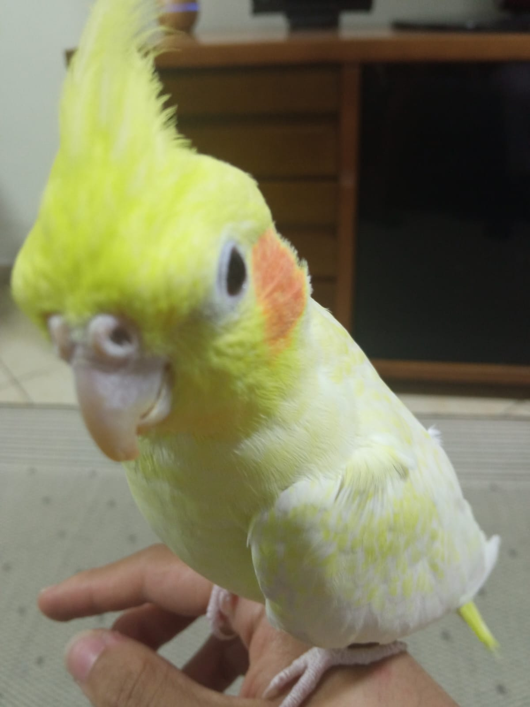

Apresentação Pessoal - Joel Gracek
TÓPICOS DA PÁGINA


Curiosidades sobre mim
- Eu tenho 4 calopsitas: os papais Billy e Bella e os filhotes Nino e Nina.


- Eu já tive um canal de jogos no Youtube, com ele, aprendi muito sobre edição de vídeo.

